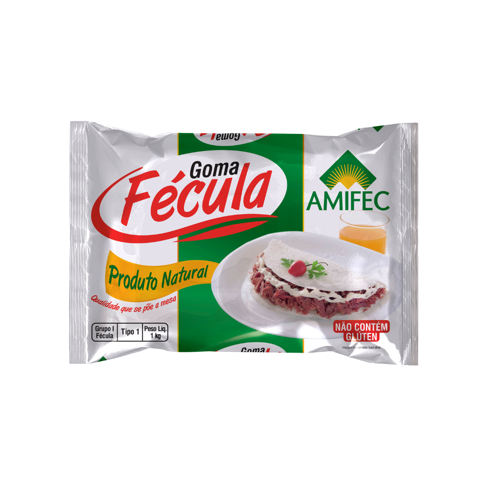
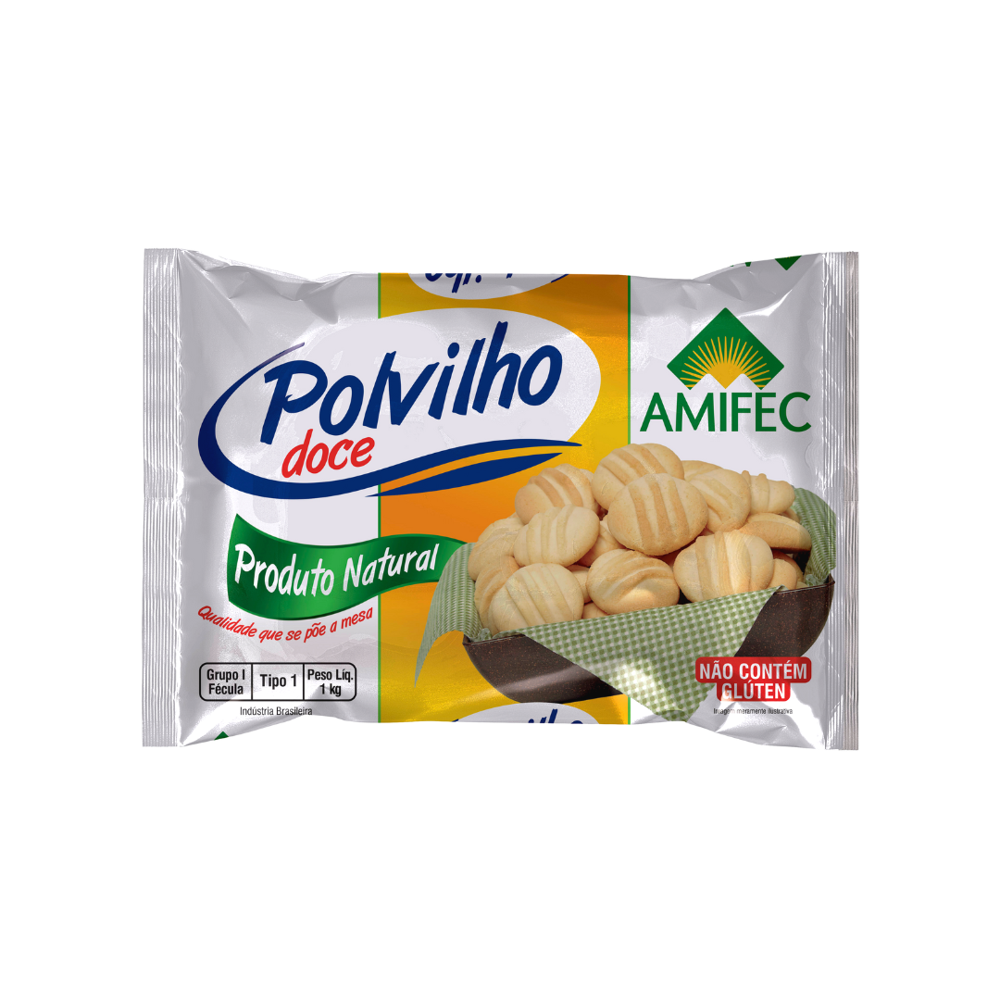
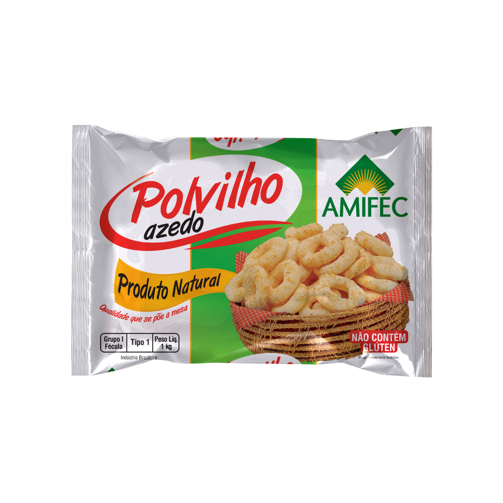
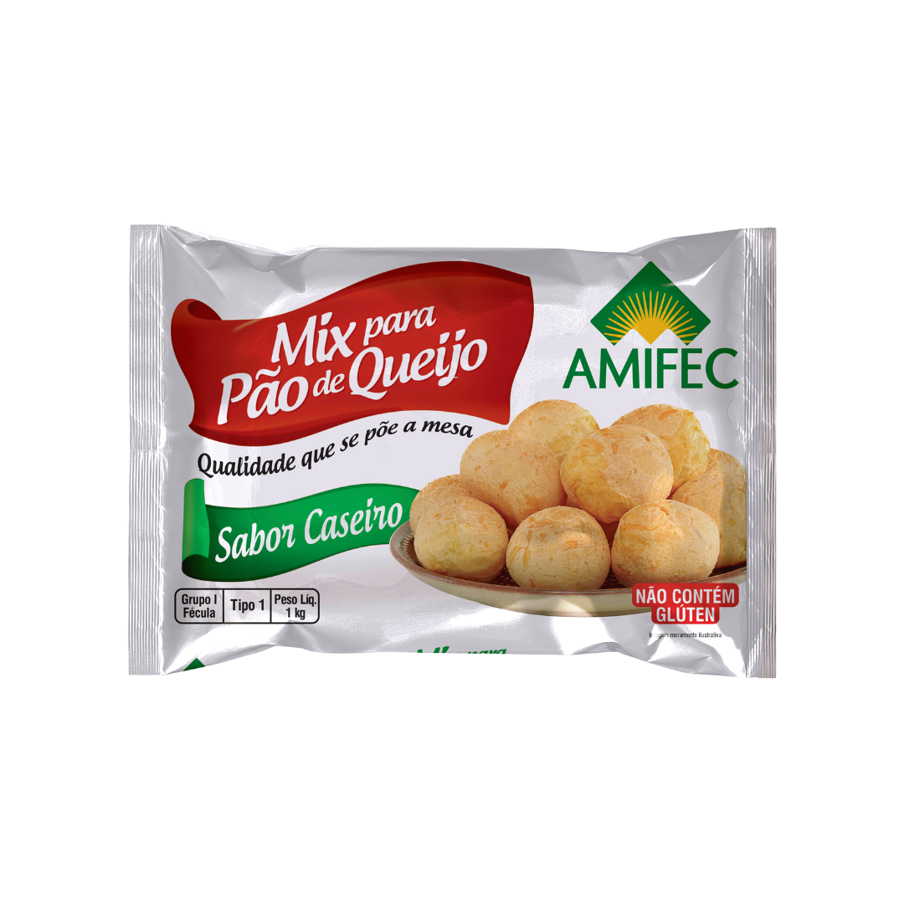
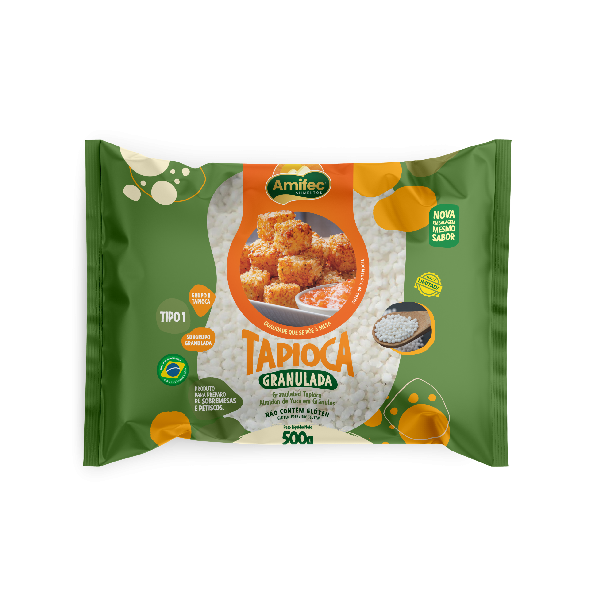

Linha de Produtos Amifec
Alguns produtos vendidos pela Amifec.

Féculas De Mandioca
A fécula de mandioca é um produto extraído da raiz da mandioca. Ela pode ser utilizada na fabricação de pães de queijo, bolos e biscoitos devido sua capacidade de expansão.

Polvilho Doce
O polvilho Doce artesanal é um produto obtido através da fermentação da fécula de mandioca e secagem em luz solar. Ele tem características semelhantes às do polvilho azedo artesanal, porém com um sabor e odor mais suaves.

Polvilho Azedo
Originado da fermentação cuidadosa da fécula de mandioca e secado ao sol, o Polvilho Azedo Artesanal é um produto autêntico que explode de sabor! Isso é resultado da fermentação natural, que gera ácidos únicos e inigualáveis. Uma verdadeira experiência gastronômica.
.png)
Farinha de Mandioca
É um ingrediente comum na culinária brasileira, podendo ser usada para dar crocância a pratos salgados ou como ingrediente principal em receitas tradicionais.

Mistura para Pão de Queijo
A Mistura de Pão de Queijo é uma combinação perfeita de sabores. Este produto é livre de glúten e oferece uma experiência culinária prática e deliciosa. Com preparo fácil e apenas alguns ingredientes adicionais necessários, é acompanhamento ideal para um café da manhã nutritivo ou um lanche da tarde reconfortante, aliando praticidade, sabor e bem-estar.

Tapioca
Produzida a partir de amido de mandioca, a tapioca granulada apresenta grãos irregulares que proporcionam uma textura única e especial aos seus pratos.